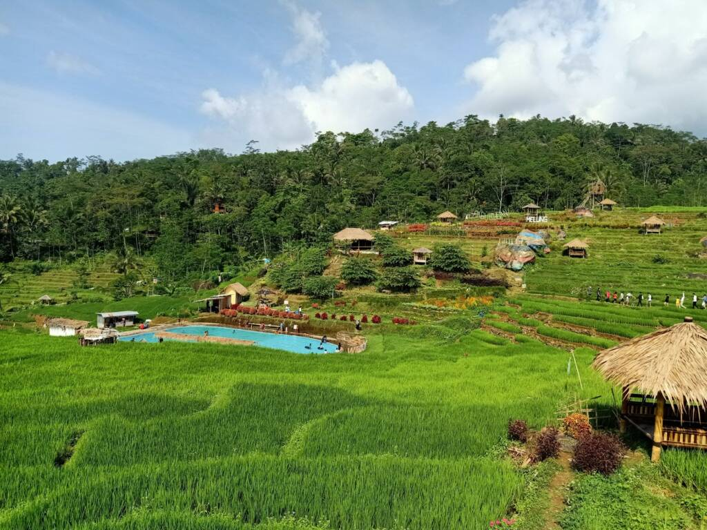

Hutan Pinus Limpakuwus

Hutan Pinus Limpakuwus wisata hutan pinus yang diperkirakan telah berusia kurang lebih 30 tahun dengan tinggi pohonnya yang menjulang tinggi dan dipenuhi oleh rimbun daunnya. Susunan pohon pinus di Limpakuwus juga sangat rapi sehingga dilihat dari sekilas saja nampak indah. Tiket masuk ke area hutan pinus ini juga masih cukup terjangkau, hanya Rp. 15.000,-/orang. Selain menawarkan keindahan alam berupa hutan pinus, disini juga tersedia beberapa wahana/kegiatan menarik yang dapat dicoba seperti ATV, Mountain Slide, jembatan gantung antar pohon, playground, paint ball, dan beberapa spot foto.
Limpakuwus, Sumbang, Kabupaten Banyumas, Jawa Tengah

instagram:@hutanpinuslimpakuwuss
Telaga Kumpe
Telaga Kumpe merupakan salah satu destinasi wisata di Jawa Tengah yang patut dikunjungi saat akhir pekan. Tempat ini masih alami dengan pemandangan berupa perbukitan hijau dan pepohonan disekelilingnya yang sangat cocok bagi pecinta foto alam atau pedesaan. Selain tempatnya yang asri, kalian juga bisa menikmati udara sejuk disekitarnya. Ditambah dengan suara alami seperti kicauan menambah kesan alami di tempat ini.
Dusun III, Gununglurah, Cilongok, Kabupaten Banyumas, Jawa Tengah
instagram:@telagakumpeofficial
Lokawisata Baturraden

Lokaswisata Baturraden merupakan salah satu pilihan destinasi wisata yang ada di Kabupaten Banyumas, Provinsi Jawa Tengah. Lokawisata Baturraden termasuk wisata pegunungan mengingat lokasinya yang berada di kaki Gunung Slamet, dengan ketinggian 640 meter di atas permukaan laut. Lokasi tepatnya berada di Dusun I Karangmangu, Kecatan Baturaden, Banyumas, Jawa Tengah. Baturraden sudah dikenal sebagai lokawisata sejak tahun 1928. Hal ini imbas dari daerah sekitarnya yang menjadi tempat hunian para pejabat Belanda.
Dusun I Karangmangu, Karangmangu, Kec. Baturaden, Kabupaten Banyumas, Jawa Tengah
instagram:@lokawisata_baturraden
Menggala Ranch
Menggala Ranch merupakan destinasi eduwisata yang berada di daerah sejuk di ketinggian kisaran 700 meter di atas permukaan laut (mdpl) dengan suhu rata-rata 17 hingga 21 derajat Celcius. Objek wisata ini diapit oleh perbukitan indah, tepatnya di Cipendok yang disebut sebagai New Zealand of Java. Menggala Ranch menyuguhkan pemandangan peternakan sapi-sapi yang berkeliaran seperti layaknya di Selandia Baru. Menggala Ranch cocok sebagai tempat wisata keluarga. Mulai dari anak-anak, remaja hingga dewasa. Semuanya akan menemukan experience yang berbeda jika dibandingkan destinasi lainnya.
Tumiyang, Kec. Pekuncen, Kabupaten Banyumas, Jawa Tengah
instagram:@menggalaranch
Curug Bayan
Curug Bayan berlokasi kurang lebih 3 kilometer dari Wisata Alam Baturaden yang terkenal di Kabupaten Banyumas. Lokasinya pun sangat dekat dengan jalan raya, sehingga tidak perlu jalan jauh untuk menuju air terjun. Alamnya begitu asri, ditambah keindahan dam peninggalan Jepang dan Belanda yang masih berdiri kokoh. Air terjun ini memiliki ketinggian kurang lebih 7 meter saja, namun pesonanya tetap menakjubkan. Di bawahnya terdapat kolam alami dengan luas sekitar 200-300 meter persegi dengan kedalaman 2-5 meter. Air terjunnya begitu jernih sehingga dasar kolam berupa batuan dapat terlihat dengan sangat jelas. Pengunjung dapat berenang dan bermain air di kolam tersebut dengan bebas.
Dusun II Ketenger, Ketenger, Kec. Baturaden, Kabupaten Banyumas, Jawa Tengah
instagram:@curug_bayan
Pagubugan Melung
Wisata Pagubugan Melung sangat cocok untuk dijadikan rekreasi bersama keluarga, kamu bisa sambil berpikinik, bersantai, berenang, berfoto selfie, hingga berkemah. Saat menghabiskan waktu liburanmu disini kamu akan merasakan sensasi seperti berlibur di pedesaan. Gemericik air, hamparan sawah yang mengelilingi area wisata, udara yang sejuk, pemandangan Gunung Slamet, serta beberapa kedamaian lainnya. Ditengah segala fasilitas yang tersedia, Wisata Pagubugan Melung ini termasuk salah satu tempat wisata yang murah meriah di Kabupaten Banyumas. Hanya sekali membayar tiket, kamu sudah bisa menikmati berbagai daya tarik yang ditawarkan.
Dusun III, Melung, Kec. Kedungbanteng, Kabupaten Banyumas, Jawa Tengah
instagram:@pagubugan_melung
 purwokertofoodtravel@gmail.com
purwokertofoodtravel@gmail.com
 087812819109
087812819109